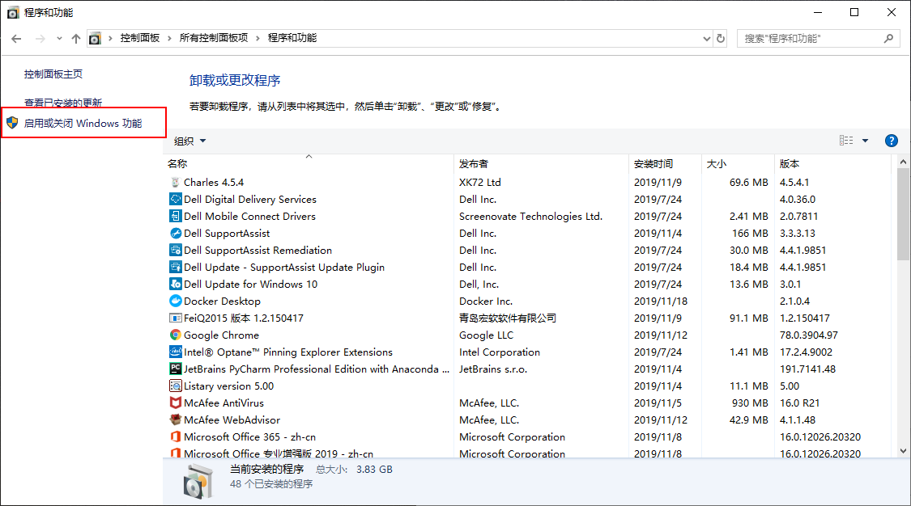
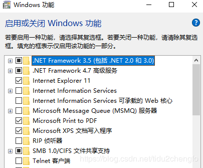
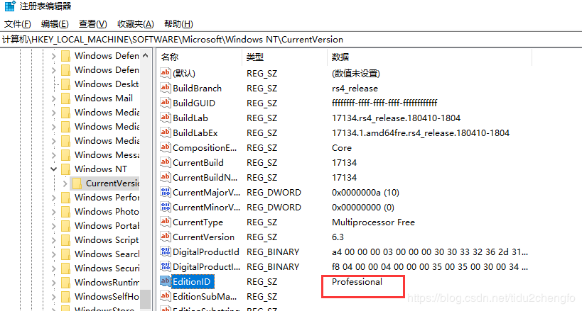
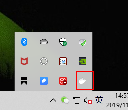

一、打开Windows的Hyper-V功能
依次选择“控制面板”->“程序”-> “启动或关闭Windows功能”，然后勾选Hyper-V选项。



点击确定后，系统会自行更新，更新完成后提示重启电脑，重启电脑后，左键点击win图标，查看电脑全部应用，找到“windows管理工具”。点开可以看到有一个Hyper-V管理器则表示已成功打开Hyper-V，点击可以查看管理器内容。

二、默认情况下win10家庭版是没有hyper-V的

- 将下述代码写入
Hyper-V.bat文件中，右键以管理员身份运行，需要几分钟时间
pushd "%~dp0"
dir /b %SystemRoot%\servicing\Packages\*Hyper-V*.mum >hyper-v.txt
for /f %%i in ('findstr /i . hyper-v.txt 2^>nul') do dism /online /norestart /add-package:"%SystemRoot%\servicing\Packages\%%i"
del hyper-v.txt
Dism /online /enable-feature /featurename:Microsoft-Hyper-V-All /LimitAccess /ALL
完成安装后

三、安装docker
1、安装 Toolbox
最新版 Toolbox 下载地址： https://www.docker.com/get-docker，下载docker需要先注册用户。


2、点击安装文件，在系统检查项会报错误
Docker for Windows requires Windows 10 Pro or Enterprise version 14393, or Windows server 2016 RTM 或者 Docker Desktop requires Windows 10 Pro or Enterprise version 15063 to run. 等其他错误。
此时可以通过修改注册表，修改前后状态，如下图：


3、 重新启动安装文件，完成安装，重启电脑后，托盘上出现docker图标：
